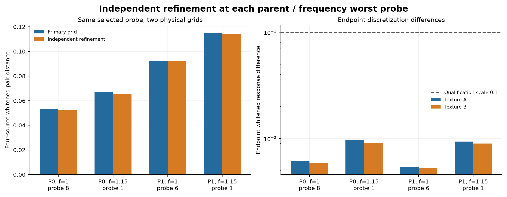
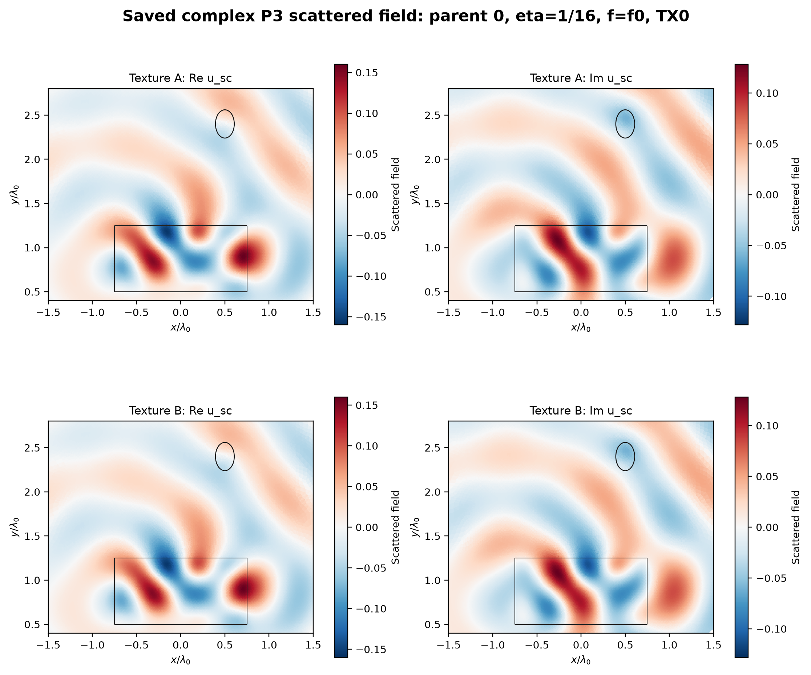
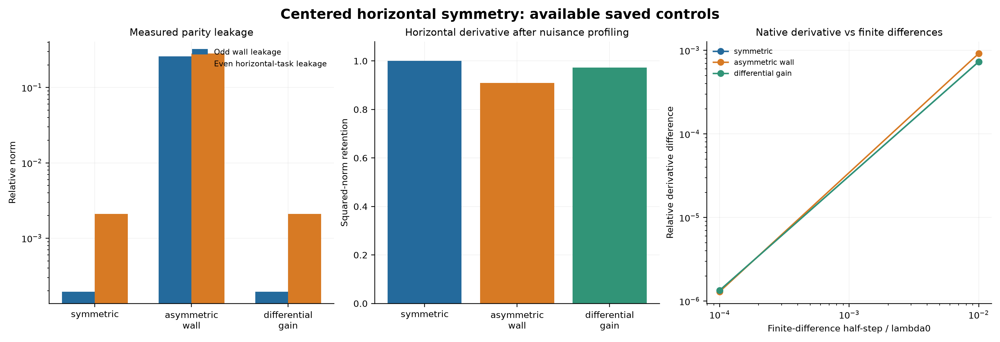
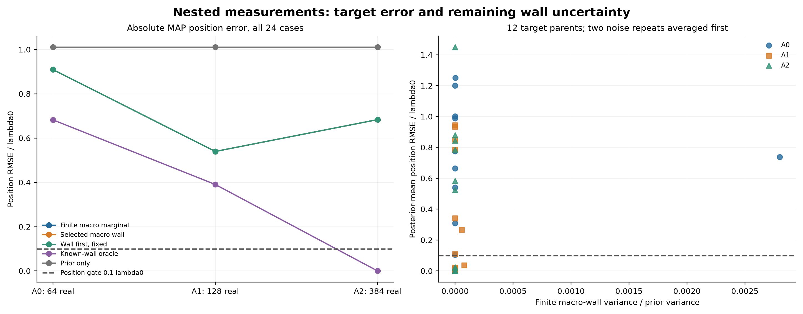
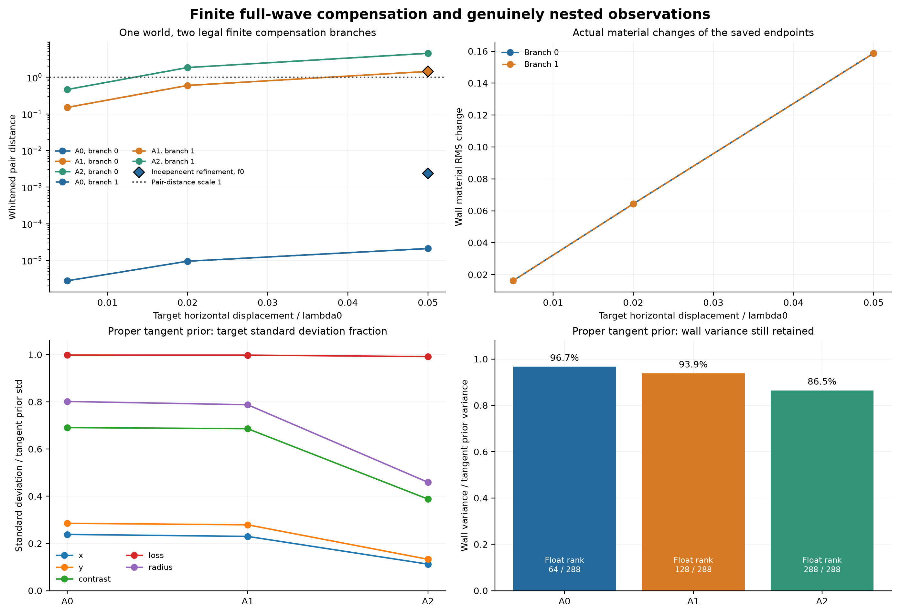
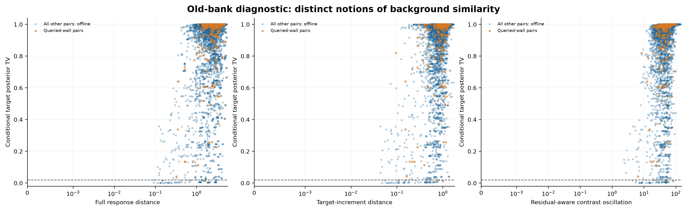
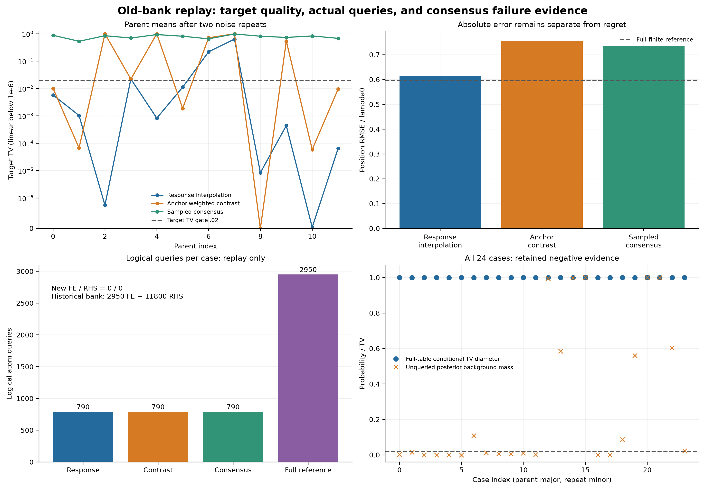
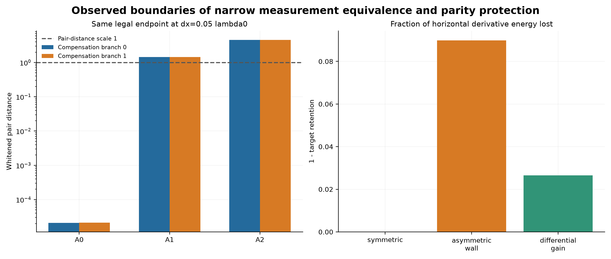

实际材料、复场与目标结果
全部图表来自保存的实验数组。点击图片查看原尺寸；原始 CSV、场、后验和作业回执在完整复现包中。各图的范围限制保留如下。
F01

颜色为真实离散材料，不表示反演恢复；所有父世界及两纹理均显示，空气为1。
F02

各尺度全部探针数不同：n=8/12只运行4个f0探针及两个单目标频率压力点，n=16有14个f0探针。全保存最大值不是整个连续目标族上界。
F03

经验网格差及端点差和不是连续PDE误差证书，也不覆盖未复核的全部目标。
F04

仅可视化已保存场；非重新求解。每个细分三角形为真实P3值的平色显示，不声称连续场已认证。
F05

中心横向局部任务控制；机器最小二乘rank不是严格rank或全目标定位证书。当前已保存case数=3。
F06

12个target parent但只有2个微结构wall parent。墙方差属于6个宏观墙的近似模型，不是真实微结构posterior，也不保证模型正确或校准。墙均值RMS误差与目标边缘重现差均保存于CSV。
F07

两个分支不是两个独立物理parent。找到的端点仅给歧义存在证据，不给全局profile最优或上界；float rank不是认证精确rank，切线Gaussian不是boxed nonlinear posterior。
F08
whole-C使用同一个仅为H训练的基底，不是最优whole-C对照。Euclidean FE系数core谱不是完整H或物理L2谱；没有operator norm、posterior、连续PDE证书或等成本加速结论。原始/修复/总任务含setup与validation，direct reference只承担评分。
F09

完整表诊断仅在输出封存后计算，不能归为在线节省；横轴单位不同，不比较其数值大小。
F10

查询图不是PDE速度图；真实新增FE/RHS为0。没有在线一致性证书，冷PDE支路未触发。
F11

这里按同一已找到端点比较，不能断言A1/A2下不存在另一补偿端点。对称压力仅一个物理world的三个控制，不是三个独立重复或一般unknown-wall失败定理。
F12

零新增PDE。2墙×4目标的有限共同空间控制；用完整目标诱导响应作分母，非绝对总场；不是均匀物理或posterior证书。
F13

48原子proper有限prior、同生成家族控制；没有修改在线prior。给定真实macro的熵/方差/TV都明确标OFFLINE，不是在线真值选组。全表均已查询，不能据此声称在线停止、查询节省、连续posterior或统一Maxwell证书；两种texture的损耗相同，不能由此宣称loss不确定。
F14

这是有界development profile及离散独立细化证据，不是全局profile infimum、精确连续等值族或连续误差上界。原F07/F11只说明原端点在新增测量下的变化；本图显示重新优化可重新找到噪声尺度pair，不能把旧图升级成唯一性。
F15

全部NONCONVERGED_CALL_CAP，不能升级为充分收敛的成熟FWI或普遍成像失败。S2为后登记的中性ROI中心及此前缺失的允许椭圆方向，development adaptation和成本均保留；没有用GT挑起点或挑winner。